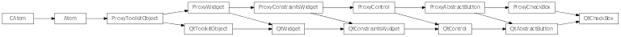

CheckBox¶
- class enaml.widgets.check_box.CheckBox(parent=None, **kwargs)[source]¶
Bases: enaml.widgets.abstract_button.AbstractButton
An checkable button represented by a standard check box widget.
Use a check box when it’s necessary to toggle a boolean value independent of any other widgets in a group.
When its necessary to allow the toggling of only one value in a group of values, use a group of RadioButtons or the RadioGroup control from the Enaml standard library.
The interface for AbstractButton fully defines the interface for a CheckBox.
- checkable¶
Check boxes are checkable by default.
- proxy¶
A reference to the ProxyPushButton object.
Backends¶
Qt¶

- class enaml.qt.qt_check_box.QtCheckBox[source]¶
Bases: enaml.qt.qt_abstract_button.QtAbstractButton, enaml.widgets.check_box.ProxyCheckBox
A Qt implementation of an Enaml ProxyCheckBox.
- widget¶
A reference to the widget created by the proxy.
Wx¶

- class enaml.wx.wx_check_box.WxCheckBox[source]¶
Bases: enaml.wx.wx_abstract_button.WxAbstractButton, enaml.widgets.check_box.ProxyCheckBox
A Wx implementation of an Enaml ProxyCheckBox.
- widget¶
A reference to the widget created by the proxy.